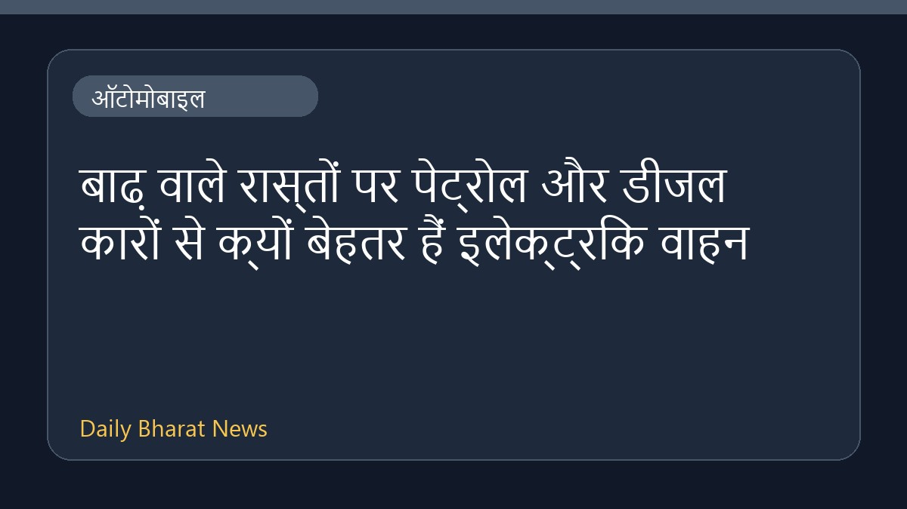

बाढ़ वाले रास्तों पर पेट्रोल और डीजल कारों से क्यों बेहतर हैं इलेक्ट्रिक वाहन

द टाइम्स ऑफ इंडिया की ऑटोमोबाइल समाचार रिपोर्ट के अनुसार, इलेक्ट्रिक कारों के बाढ़ से प्रभावित या पानी भरे रास्तों पर पेट्रोल और डीजल गाड़ियों की तुलना में बेहतर तरीके से चलने की संभावनाओं पर चर्चा की गई है। इस विषय में बताया गया है कि ईवी की बनावट और तकनीक उन्हें जलभराव वाली स्थिति में कुछ हद तक अधिक अनुकूल बना सकती है। हालांकि, इस बारे में उपलब्ध विवरण अभी सीमित हैं और पूरी जानकारी के लिए विस्तृत रिपोर्ट का अध्ययन किया जाना चाहिए।
मूल स्रोत: Automobile News Sources
Why electric cars may handle flooded roads better than petrol and diesel vehicles - The Times of India ↗
Why electric cars may handle flooded roads better than petrol and diesel vehicles - The Times of India ↗